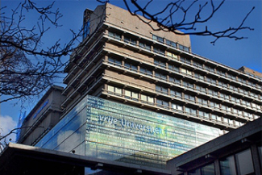

Home
|  |
The 15th International Symposium on Research in Attacks, Intrusions and Defenses previously known as Recent Advances in Intrusion Detection, will be held at Vrije Universiteit in Amsterdam, The Netherlands, September 12-14, 2012. This symposium brings together leading researchers and practitioners from academia, government, and industry to discuss issues and technologies related to intrusion detection and defense. |


| Paper submission deadline: | April 6, 2012 11:59PM PDT |
| April 13, 2012 11:59PM PDT (extended) |
|
| Paper notification: | June 2, 2012 |
| Paper camera-ready copy: | June 16, 2012 |
| Poster submission deadline: | June 5, 2012 11:59PM PDT |
| (Now open; submit here!) |
|
| June 11, 2012 11:59PM PDT (extended) | |
| Poster notification: | July 1, 2012 |
| Early Bird registration closes: | August 10, 2012 |
| (Now open; register here!) |

|
RAID is published as part of Springer's prestigious Lecture notes in Computer Science. |
General Credits - Stefano Ortolani | Background banner photo - Joan Campderros-i-Canas